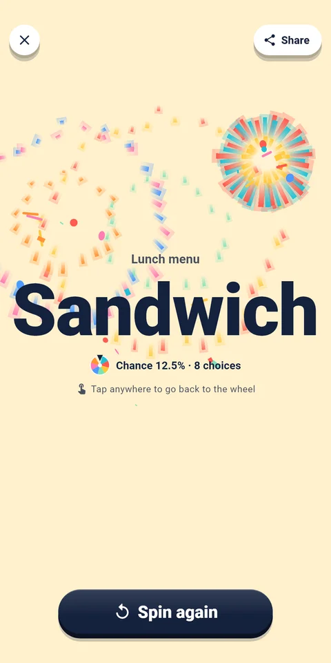
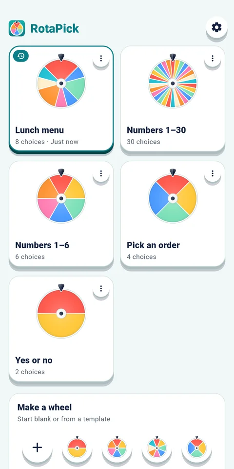
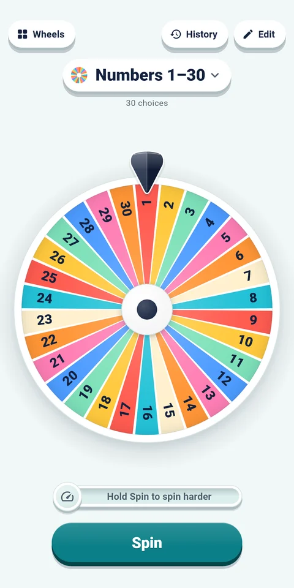

Screenshots







App Info
| App Name | RotaPick |
|---|---|
| Version | 1.0.0 |
| Developer | Willee Project |
| Platform | Android |
Write your choices and you get a wheel split into colored slices. Spin it and the slice that stops under the pointer is the pick. Use it when you need to choose one: a lunch menu, an order, yes or no, a draw.
- There is no sign-up and no login. The wheels you make and your history are stored on your device.
- It works offline. The internet is used only for the ad at the bottom of the screen and for usage statistics and crash reports.
- The language follows your device settings. English, Korean, Japanese and Chinese (Simplified and Traditional) are supported, and you can pick one in Settings.
- The result is never decided in advance. A slice's width is its chance (chapter 8).
1. Getting started
- The first time you open the app, a Lunch menu wheel opens right away. A one-time hint under the name reads "Tap the name for other wheels or a new one".
- After that, the wheel you opened last opens straight away.
- Tap the name plate, or Wheels in the top bar, to go to the list of wheels. You make new wheels there (chapter 4).
2. The wheel screen
The wheel is in the middle. At the top are the wheel's name plate and three buttons (Wheels, History, Edit). At the bottom are the Power bar and the Spin button.
Spinning
- Tap: a short tap on Spin spins at normal power.
- Hold: hold it and the Power bar fills (full in about 1.2 seconds). Let go and the wheel spins with that power. More power means a faster start and a longer spin.
- Flick: you can also flick the wheel with your finger. The faster the flick, the stronger the spin.
- The number on the bar is the power, from 0 to 10. It shows the power you are building while you hold, your finger speed while you flick, and the wheel's speed while it turns.
- Power cannot be used to aim at a slice. The last turn of the wheel is picked evenly.
- The length of a spin follows Spin time in Settings (Short about 3 s, Normal about 5 s, Long about 8 s), stretched or shortened a little by the power (chapter 7).
- Each time the pointer crosses a slice edge you hear a tick and feel a buzz. While the wheel turns, the slice under the pointer is named where the wheel's name was.
When Remove picked is on
A Pick order strip appears below the wheel (above the Power bar) with the picked slices and how many are left. When you close a result, the picked slice shrinks away from the wheel. Refill brings them all back. When everything has been picked you see "Every choice has been picked." and Refill. If only one choice has text, you see "Write at least two choices." and an Edit button.
3. The result
- When the wheel stops, the picked slice pops out of the wheel, its color fills the screen and the result appears in big letters, with its Chance next to it.
- Share sends a message with the result and the store link to another app.
- Spin again spins right away. Hold it and the power builds the same way.
- Tap the × at the top left or anywhere on the screen to go back to the wheel (the narrow strip just above the ad does not react).
- The result is added to History the moment it is picked.
4. The list of wheels
- Wheels appear as big round cards, two per row. Each card shows the wheel's name, how many choices it has and when it was last used (Just now, a time, Yesterday or a date). A wheel with Remove picked on also shows left/total.
- The wheel you used most recently comes first. The one you just used gets a teal rim and a small clock mark at the top left.
- Tap a card to open that wheel.
- The card menu: Rename, Duplicate (a copy named "{name} copy" appears in the next place after the original (possibly beside it, since the grid has two columns), removed slices come back and the history is empty) and Delete (it asks once).
- Press and hold a card, then drag to change the order.
- On the Make a wheel card, start from Blank or pick one of four templates. The new wheel goes to the front of the list. A Blank wheel opens in Edit right away; a template wheel opens on its wheel screen.
| Template | Choices |
|---|---|
| Yes or no | Yes, No |
| Numbers 1–6 | 1 to 6 |
| Lunch menu | Pizza, Burger, Sushi, Tacos, Salad, Pasta, Sandwich, Noodles |
| Pick an order | A, B, C, D (starts with Remove picked on) |
Open Settings (chapter 7) with the settings button at the top of the list screen.
5. Editing
Open it with Edit on the wheel screen. Everything is saved as you type, and there is no save button.
At the top are a preview wheel, the Wheel name, "n on the wheel · m removed" and the Remove picked switch. Below are the choice rows.
- Choices n / 100: a wheel has 2 to 100 choices. Add adds a row, and pressing "next" on the keyboard in the last row adds one too.
- Each row shows a color dot, the text, ×n (weight) and the chance (%). The chance is the one on the wheel right now.
- Tap a row to open it. Change the Weight from ×1 to ×10 (the slice gets that much wider) or tap Delete. After deleting, "Choice deleted" and Undo show for a moment.
- Color: tap the dot for 8 colors and Auto. Auto picks a color different from the neighbors, and the color follows the slice when you move or delete rows.
- Reordering: drag a row by its handle, or use the Order buttons in an open row (Move to top, Move up, Move down, Move to bottom).
- With Remove picked on, a picked slice leaves the wheel until you tap Refill. A removed slice is dimmed and tagged "Picked".
6. History
Open it with History on the wheel screen. Each wheel keeps its latest 50 results.
- Most picked shows how many times each slice came up next to its slice width (%). The count is what actually happened; the % is the share the slice should get.
- Below, results are grouped under Today, Yesterday and dates, newest first.
- Clear history asks once, then clears the history of that wheel.
7. Settings
Open them with the settings button on the list of wheels. There are two groups.
Sound & effects
| Item | What it does |
|---|---|
| Sound effects | Turns the tick, stop, result and burst sounds on or off |
| Vibration | Turns the buzzes while spinning and stopping on or off |
| Reduce effects | Tones down effects such as sparks, bursts and the color spread |
| Spin time | Choose Short (about 3 s), Normal (about 5 s) or Long (about 8 s) |
General
| Item | What it does |
|---|---|
| Language | Follow Device language (default) or pick one from the list (English · 日本語 · 한국어 · 简体中文 · 繁體中文) |
| Privacy options | Reopens the ad consent form. Only shown in regions that require consent (such as Europe) |
| About | Version, this guide (How to use), Rate on Google Play, Privacy policy, Open-source licenses, More apps (tapping one opens Google Play) and See all apps |
The screen colors follow your device's dark mode setting. There is no switch inside the app.
8. Fairness
- A slice's width is its chance. There are no hidden odds. A ×2 slice is twice as wide as a ×1 slice and has twice the chance.
- The result is not decided in advance. Each spin draws its starting speed and slowdown at random, and the angle where the wheel stops decides the slice.
- Power and spin time are part of the show; they cannot be used to choose a slice.
9. Ads and your data
- A single banner ad sits at the very bottom of the screen. It is the only ad, and the Spin button and the wheel keep a good distance from it. The ad strip is hidden while the keyboard is open.
- In regions that require consent (such as Europe), an ad consent form appears the first time you open the app. You can change your choice later under Privacy options in Settings.
- There are no in-app purchases.
- Wheels, choices, colors, weights, history and settings are stored only on your device and are not sent to a server. If Google backup (Android Auto Backup) is on, they are included in it. Uninstalling the app deletes the data on the device.
- For details, see the Privacy Policy.